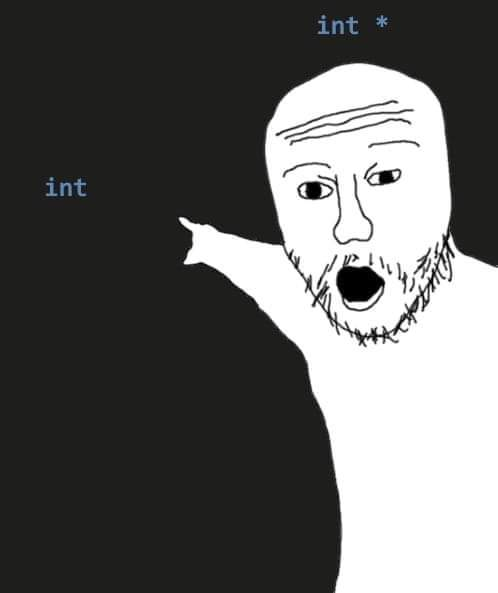

Today we'll learn about pointers and arrays in C++ as we build up the toolkit we will need to implement awesome ADTs like vectors and stacks.
- Readings: Text 11.1, 11.2, 11.3
- Lecture quiz on Canvas
Lecture Video
Contents
1. Preliminary Note: Don't Panic!
2. Preliminaries: Returning Vectors from Functions
3. Memory Addresses
4. Pointers
5. Style Note: Pointer Declarations
6. The Ampersand Operator Means Different Things in Different Contexts!
7. Dreferencing Pointers
8. The Asterisk Operator Means Different Things in Different Contexts!
9. Other Odds and Ends
10. Treasure Hunt
11. Arrays
12. The Relationship Between Pointers and Arrays: Naked Array Variable Names
13. Arrays Are Dangerous!
14. What's next?
15. Exercises
Preliminary Note: Don't Panic!
A word before we dive into today's lecture notes:
Pointers can feel quite intimidating when you first see them. Memory addresses look wonky and wild (they're just numbers, but they're represented using base 16, or "hexadecimal"), and there are a lot of obnoxious syntax details to parse through, like the fact that the & and * operators mean different things in different contexts. If you're feeling a bit lost in today's lecture, don't panic! That's totally normal. To get comfortable with pointers, you'll need to spend a lot of time toying with code, moving asterisks and ampersands around in your code, printing out memory addresses, and drawing lots of diagrams to help make sense of what's going on in memory.
The other intimidating thing is that the utility of pointers won't be immediately clear from today's lecture, but I promise we will see a use for them soon (in our next class). In the meantime, take some time to focus on mastering the use of pointers in small, somewhat accessible programs that don't do anything particularly useful.
Preliminaries: Returning Vectors from Functions
I started class today by talking about the following function:
Vector<int> createRandoVector(int n)
{
Vector<int> v;
for (int i = 0; i < n; i++)
{
v.add(randomInteger(1, 100));
}
return v;
}
Recall from our discussion of C++ classes and object-oriented programming last week (when we talked about destructor functions) that local variables die when we leave a function. Since the vector in our createRandoVector() function dies when we hit the return statement in the code above, it is not actually returning the vector that function created. Rather, our program generates a copy of that vector back back in the function that called this one. This is a problem because creating a new copy of that vector could potentially be a slow operation. This is especially problematic if that vector contains a lot of elements that need to be copied.
So, our goal over the next few classes is to talk about how we can create variables that live beyond the lifespan of a function -- a sort of programming necromancy, if you will. If we can do that, then we'll be able to return a vector from a function without having to go through the slow operation of creating a new copy of that vector! Before we can get there, however, we need to spend a day discussing one of the primary tools of this so-called programming necromancy: pointers.
Memory Addresses
Before we defined what a pointer is, we saw today that every variable we create in C++ has an address where it resides in memory. To access the address associated with a variable, we place an ampersand in front of the variable name, like so:
main.cpp
#include <iostream>
#include "console.h"
using namespace std;
int main()
{
int x = 55;
cout << "x : " << x << endl;
cout << "&x : " << &x << endl;
return 0;
}
memory diagram
main():
x 0x7fe7f49e0c34
+----------------+
| 55 |
+----------------+
output
x : 55
&x : 0x7fe7f49e0c34
Pointers
What if we want to store that memory address in a variable? It's quite a wonky-looking thing. It's certainly not an integer, and it's actually not a string, either. If we want to store that address in a variable, we need a new datatype. That's where pointers come in.
(Key take-away!) A pointer is simply a variable that holds a memory address.
To create a pointer, we need to know what kind of address it will be holding. Is it the address of an int? A string? A Quokka object?
The syntax for creating a pointer is as follows:
DATA_TYPE_POINTED_TO * VARIABLE_NAME ;
For example, to create a variable named p that can hold the address of an integer, the syntax is as follows:
int *p;
Here's that idea in action:
main.cpp
#include <iostream>
#include "console.h"
using namespace std;
int main()
{
int x = 55;
int *p = &x;
cout << "x : " << x << endl;
cout << "&x : " << &x << endl;
cout << endl;
cout << "p : " << p << endl;
cout << "&p : " << &p << endl;
return 0;
}
memory diagram
main():
x 0x7fbc09bdfc2c
+----------------+
| 55 |
+----------------+
p 0x7fbc09bdfc30
+--------------------------------+
| 0x7fbc09bdfc2c |
+--------------------------------+
output
x : 55
&x : 0x7fbc09bdfc2c
p : 0x7fbc09bdfc2c
&p : 0x7fbc09bdfc30
Notice above that the value inside p is the address of x, but p has its own address, distinct from the address of x.
We say that p now points to x. We say also that p is now a pointer to x. One can imagine going up to the variable p and saying, "Hey, do you know where x is?" and p pointing over at x (which it can do because it knows the address where x is hanging out).
In other words, we have this:

Style Note: Pointer Declarations
When creating pointers, some people prefer this:
int* p;
...over this:
int *p;
Both compile just fine and mean the same thing, but some people prefer the former approach because variable declarations have always looked like this in C++:
DATA_TYPE VARIABLE_NAME
The former approach matches that pattern, since int* is our data type. The latter approach seems aberrant, as it introduces a space in the middle of the data type itself rather than between the data type and the variable name.
However, if we do this:
int* p, q, r;
...we actually only get one pointer: p. In this case, q and r are actually just regular integers -- not pointers! 🤯
So, some people consider the former approach to pointer declaration to be a bit misleading, since it makes it look like the * would apply to all the variables declared on a single line, when it in fact only applies to the first variable in a list like that. People who fall into this camp instead prefer the following style to emphasize that there needs to be a * for each variable:
int *p;
int *q, *r, *s;
With that said, both are acceptable, and you are welcome to use whichever one feels more comfortable to you.
The Ampersand Operator Means Different Things in Different Contexts!
(Super Important!) One of the more obnoxious things about learning how pointers work in C++ is that C++ uses the ampersand operator to mean a few completely different things in different contexts. As relates to memory manipulation, there are actually two uses of the & operator:
- When we use & in a variable DECLARATION, that creates a REFERENCE.
- When we use & on an ALREADY-EXISTING variable, that gives us its ADDRESS.
For example:
#include <iostream>
#include "console.h"
#include "vector.h"
using namespace std;
// On the following line, the & is used in a variable declaration (we are creating a
// new variable, v), and so it is being used to create a reference.
void populateVector(Vector<int>& v, int value)
{
for (int i = 0; i < v.size(); i++)
{
v[i] = value;
}
}
int main()
{
int x = 55;
// On the following line, the & is being applied to an already-existing variable, x,
// and so it is being used to give us the address of that variable. It is not
// creating a new reference variable.
cout << "&x : " << &x << endl;
return 0;
}
Dreferencing Pointers
We can actually use a pointer to modify the contents of the variables they point to indirectly. To do that, we apply an asterisk (*) to a pointer variable. The asterisk says, "Hey, I know you're a pointer. That means the value you hold is some memory address. Let's go to that memory address!" This is called dereferencing our pointer.
Here's an example of that in action:
main.cpp
#include <iostream>
#include "console.h"
using namespace std;
int main()
{
int x = 55;
int *p = &x;
// Here, we dereference p. We go to the address p holds, and that is where
// we drop off the value 30. Notice that we are not setting p = 30. (We're
// not dropping the value 30 into the box called p.)
*p = 30;
cout << "x : " << x << endl;
cout << "&x : " << &x << endl;
cout << endl;
cout << "p : " << p << endl;
cout << "&p : " << &p << endl;
// We can also dereference p to find out what value is in the variable that
// it's pointing to! The following line does not print the value inside p
// itself. It goes to the address that p contains and tells us what it finds
// in the box at that address.
cout << "*p : " << *p << endl;
return 0;
}
memory diagram
main():
x 0x7fbc09bdfc2c
+----------------+
| 30 |
+----------------+
p 0x7fbc09bdfc30
+--------------------------------+
| 0x7fbc09bdfc2c |
+--------------------------------+
output
x : 30
&x : 0x7fbc09bdfc2c
p : 0x7fbc09bdfc2c
&p : 0x7fbc09bdfc30
*p : 30
The Asterisk Operator Means Different Things in Different Contexts!
Just as the ampersand operator means different things in C++ in different contexts, so too does the asterisk. As relates to memory manipulation, there are actually two uses of the * operator:
- When we use * in a variable DECLARATION, that creates a POINTER.
- When we use * on an ALREADY-EXISTING variable, that DEREFERENCES our pointer. (In other words, it GOES to the address that our pointer is pointing to and then proceeds to operate on whatever variable it finds there.)
For example:
#include <iostream>
#include "console.h"
using namespace std;
int main()
{
int x = 55;
// On the following line, the * is used in a variable declaration (we are creating a
// new variable, p), and so it is being used to create a pointer.
int *p = &x;
// On the following line, the * is being applied to an already-existing variable, p,
// and so it is being used to dereference of that variable. It is telling us to go
// to whatever address p contains (the address of x) and drop the 30 off there (in x).
*p = 30;
// This will print 30 now.
cout << x << endl;
return 0;
}
Other Odds and Ends
We also saw in class that we can have multiple pointers to the same variable, and we can create pointers to other datatypes, such as strings. I will flesh out this section with those examples sometime soon.
Treasure Hunt
Consider the following function that we saw earlier this quarter when discussing pass-by-reference functions:
main.cpp
#include <iostream>
#include "console.h"
using namespace std;
int treasureHunt(int& a, int& b, int& c)
{
int totalBooty = 0;
totalBooty += a;
totalBooty += b;
totalBooty += c;
a = 0;
b = 0;
c = 0;
return totalBooty;
}
int main()
{
int treasureHoard1 = 200;
int treasureHoard2 = 300;
int treasureHoard3 = 500;
cout << treasureHunt(treasureHoard1, treasureHoard2, treasureHoard3) << endl << endl;
cout << "treasureHoard1: " << treasureHoard1 << endl;
cout << "treasureHoard2: " << treasureHoard2 << endl;
cout << "treasureHoard3: " << treasureHoard3 << endl;
return 0;
}
output
1000
treasureHoard1: 0
treasureHoard2: 0
treasureHoard3: 0
We saw in class today that we could accomplish the same thing with pointers, like so:
main.cpp
#include <iostream>
#include "console.h"
using namespace std;
int treasureHunt(int *a, int *b, int *c)
{
int totalBooty = 0;
// Print memory addresses contained in a, b, and c.
cout << "a: " << a << endl;
cout << "b: " << b << endl;
cout << "c: " << c << endl;
// If we didn't dereference a, b, and c below, we would just be attempting to add
// memory addresses to totalBooty rather than going to main() and getting the
// integer values that a, b, and c are pointing to.
totalBooty += *a;
totalBooty += *b;
totalBooty += *c;
// If we didn't dereference a, b, and c below, we would just be attempting to set
// these local pointers to zero rather than going back to main() and setting the
// various treasureHoard variables to zero.
*a = 0;
*b = 0;
*c = 0;
return totalBooty;
}
int main()
{
int treasureHoard1 = 200;
int treasureHoard2 = 300;
int treasureHoard3 = 500;
// Print memory addresses of treasure hoard variables.
cout << "&treasureHoard1: " << &treasureHoard1 << endl;
cout << "&treasureHoard2: " << &treasureHoard2 << endl;
cout << "&treasureHoard3: " << &treasureHoard3 << endl;
// Notice that we need the ampersands (&) below because our function is using
// three pointer parameters.
cout << treasureHunt(&treasureHoard1, &treasureHoard2, &treasureHoard3) << endl;
cout << "treasureHoard1: " << treasureHoard1 << endl;
cout << "treasureHoard2: " << treasureHoard2 << endl;
cout << "treasureHoard3: " << treasureHoard3 << endl;
return 0;
}
memory diagram (while in the treasureHunt() function, before wiping out the three hoards)
treasureHunt():
totalBooty (0x7fd0223e0c04)
+----------------+
| 0 |
+----------------+
a 0x7fd0223e0bf8
+--------------------------------+
| 0x7fd0223e0c2c |
+--------------------------------+
b 0x7fd0223e0bf0
+--------------------------------+
| 0x7fd0223e0c30 |
+--------------------------------+
c 0x7fd0223e0be8
+--------------------------------+
| 0x7fd0223e0c34 |
+--------------------------------+
main():
treasureHoard1 (0x7fd0223e0c2c)
+----------------+
| 200 |
+----------------+
treasureHoard2 (0x7fd0223e0c30)
+----------------+
| 300 |
+----------------+
treasureHoard3 (0x7fd0223e0c34)
+----------------+
| 500 |
+----------------+
output
&treasureHoard1: 0x7fd0223e0c2c
&treasureHoard2: 0x7fd0223e0c30
&treasureHoard3: 0x7fd0223e0c34
a: 0x7fd0223e0c2c
b: 0x7fd0223e0c30
c: 0x7fd0223e0c34
1000
treasureHoard1: 0
treasureHoard2: 0
treasureHoard3: 0
Arrays
After exploring the basics of pointers, I shifted gears a bit to talk about arrays. We saw the syntax for creating an array and accessing its elements.
An array is a variable that is able to hold multiple values of some type. An array is made up of cells. Each cell holds a single value. Those cells are numbered starting at 0 (zero); an array of length n has cells 0 through (n - 1). Recall that if we do not initialize the cells in an array, they contain unpredictable garbage values.
Recall that the elements in an array are stored in a contiguous block in memory. When we apply an offset to an array (that's the index in square brackets), that tells C++ to go to the beginning of the array and skip forward a certain number of places in memory. C++ figures out how far to skip ahead in memory based on its knowledge of how much memory a single cell takes, given the type of the array in question.
For example:
main.cpp
#include <iostream>
#include "console.h"
using namespace std;
int main()
{
// Creates an array of 5 integers. They are indexed 0 through 5.
int array[5];
// Print contents of array. The cells contain unpredictable garbage values by
// default.
for (int i = 0; i < 5; i++)
{
cout << array[i] << endl;
}
return 0;
}
memory diagram
main():
array (0x7f762d3dec20)
+-----+-----+-----+-----+-----+
| ??? | ??? | ??? | ??? | ??? | <-- uninitialized (garbage values)
+-----+-----+-----+-----+-----+
0 1 2 3 4
output
-1345686632
22008
834537024
32626
2
The Relationship Between Pointers and Arrays: Naked Array Variable Names
Toward the end of class, I showed that if we print a naked array variable name (i.e., an array variable with no square brackets attached), we get the base address of the array (i.e., the address of cell zero):
main.cpp
#include <iostream>
#include "console.h"
using namespace std;
int main()
{
int array[5];
// Prints addresses of all cells in the array.
for (int i = 0; i < 5; i++)
{
cout << "&(array[" << i << "]): " << &(array[i]) << endl;
}
// Prints base address of array. Notice this is the same as &(array[0]).
cout << endl << "Base address of array: " << array << endl;
return 0;
}
output
&(array[0]): 0x7f762d3dec20
&(array[1]): 0x7f762d3dec24
&(array[2]): 0x7f762d3dec28
&(array[3]): 0x7f762d3dec2c
&(array[4]): 0x7f762d3dec30
Base address of array: 0x7f762d3dec20
So, array looks a lot like a pointer. It contains, in fact, the address of an integer -- the first integer in our array. It stands to reason that if we create a pointer of type int *, we should be able to use that to loop through our array, as well. The square brackets operator in C++ acts as an offset whether applied to an array variable or an actual pointer:
main.cpp
#include <iostream>
#include "console.h"
using namespace std;
int main()
{
int array[5] = {10, 15, 20, 25, 30};
// p now contains the base address of the array.
int *p = array;
// Print all values in the array using p.
for (int i = 0; i < 5; i++)
{
cout << p[i] << endl;
}
return 0;
}
output
10
15
20
25
30
Note that while an array might look a lot like a pointer, the key difference is that a pointer can be assigned a new value, causing it to point elsewhere. An array variable name, on the other hand, is bound to the array it represents and cannot be made to point elsewhere.
Arrays Are Dangerous!
We saw in class that we can accidentally go out of bounds in an array. This is so dangerous! We can corrupt memory this way and get into all kinds of wacky trouble. I will expand upon this in the lecture notes sometime soon.
What's next?
On Wednesday, we'll talk about dynamic memory management. We'll see how new and delete work in C++, and we'll finally implement an ADT from scratch and fully see how it works behind the scenes.
Exercises
For the following exercises, check your answers by attempting to compile and run the code you come up with.
1. Both declarations below create integer pointers. What reasons did I give in the notes above for preferring the second approach over the first one? What reason do some people give for preferring the first approach?
int* p;
int *q;
2. Given the following code, what are some reasonable possibilities we could use to fill in the blank?
int i = 10087;
int *p = &i;
int *q = _________;
3. In the following chunk of code, if we want to execute the line y = &x, what should be the data type for y?
double x = 3.14;
_____ y;
y = &x;
4. As always, the textbook and this week's section are chock full of great exercises and additional examples to help reinforce this material.